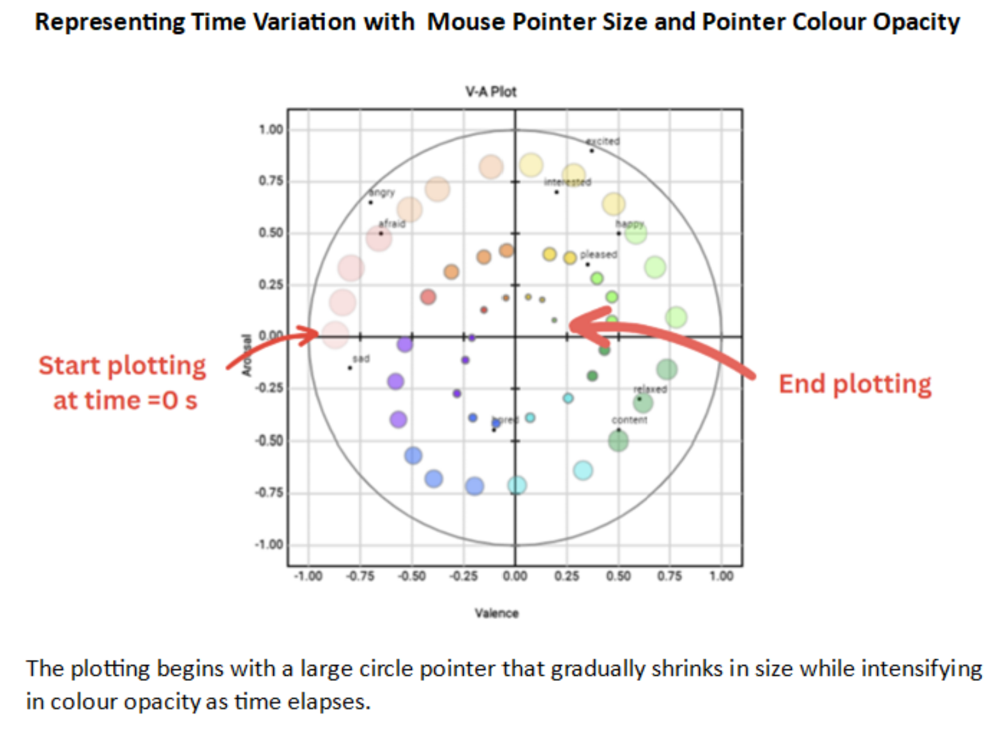

<!DOCTYPE html>
<html>
    <head>
        <title>About 2-D emotion model</title>
    </head>
    <script src="https://kit.fontawesome.com/a076d05399.js" crossorigin="anonymous"></script>
    <link href="aboutStyle.css" rel="stylesheet" type="text/css" />
    </html>
    <body>
    <div class="about_container">
        <h3>Instructions for annotating Emotion in Speech</h3>
        <hr>
        <h4><i>Using Two-dimensional (2-D) Emotion Model</i></h4>
        <ol>
            <li>Familiarise yourself with the valence-arousal plot and understand the valence (positivity/negativity) and arousal (intensity) dimensions it represents.<br>
             <strong>Valence</strong> refers to the positivity or negativity of an emotion, while <strong>Arousal </strong> indicates the intensity or level of activation.</li>    </li>
            <li>Start a media player and listen carefully to the speech. Click on the plot to get it started with annotation.</li>
            <li>As the video or audio plays, move your mouse cursor on the valence-arousal plot based on your perception of the emotions expressed. <br> Position the cursor vertically to indicate the arousal (higher at the top, lower at the bottom) and horizontally to represent the valence (positive on the right, negative on the left).</li>
            <li>Continuously adjust your cursor position on the plot to match your evolving perception of the emotions throughout the video or audio. This allows you to capture any shifts or changes in valence and arousal levels.</li>
            <li>After the video or audio ends, Click 'View Data' button to display all the annotated data.</li>
            <li>If you are satisfied with your annotation, Click 'Save as CSV' button to record your valence-arousal annotation.</li>
        </ol>
        <p><strong>Note</strong>: Be as accurate as possible in your annotations, capturing the predominant emotion conveyed. If you are unsure or if multiple emotions are present, focus on the primary or most salient emotion you perceive.</p>

        <br>
         <br><br><br>
        
    </div>
</body>
